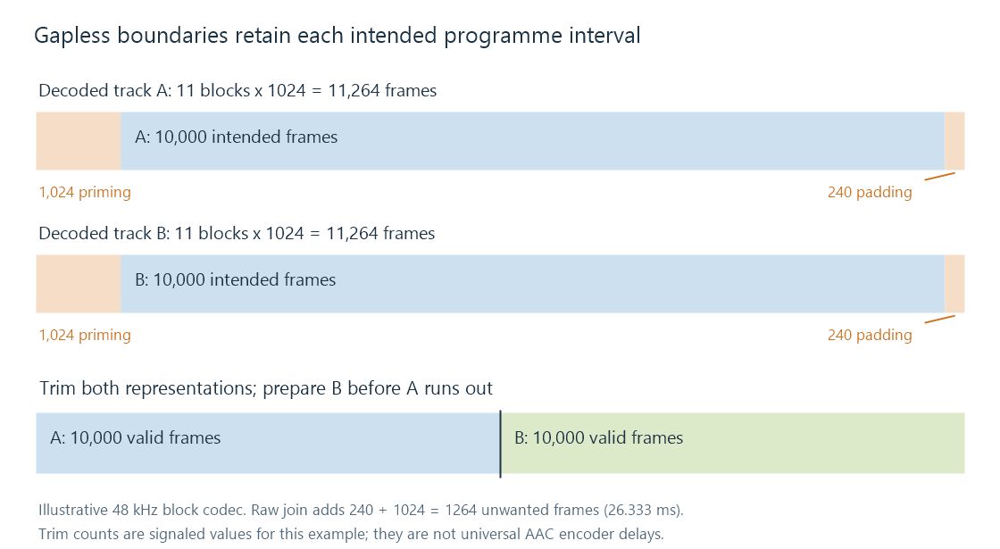

Gapless playback
A live concert, a classical movement split into tracks, or an album with continuous transitions should not acquire a little pause at every file boundary. Gapless playback presents the last intended sample frame of one track immediately before the first intended frame of the next.
It has two jobs: identify the intended audio accurately, and have the next track ready before the output runs out of data. Solving only one still permits a gap.
The boundary in sample frames
A PCM sample frame contains one simultaneous sample for each channel. At 48 kHz, each frame occupies 1/48000 second whether the signal is mono or stereo.
Consider two tracks encoded with an illustrative block codec:
| Region in each decoded track | Frames at 48 kHz | Time |
|---|---|---|
| Leading priming to discard | 1,024 | 21.333 ms |
| Intended programme to keep | 10,000 | 208.333 ms |
| Trailing padding to discard | 240 | 5.000 ms |
Each decoded representation contains 11,264 frames, exactly eleven blocks of 1,024. These counts illustrate the arithmetic; they are not universal values for AAC or any other codec.

Joining the raw decoded output would place A's 240 padding frames and B's 1,024 priming frames between their intended programmes: 1,264 frames, or about 26.333 ms. Those regions need not be literal zeros to be unwanted at the boundary.
Using the signaled trim counts, the player keeps frames 1,024 through 11,023 from each decoded representation. The resulting output is A's 10,000 intended frames followed directly by B's 10,000 intended frames.
Encoder delay explains why these extra regions exist and how formats identify them.
The next decoder must be ready in time
A player often needs to open the next file, obtain its headers, create or prime a decoder, trim its initial output, and prepare the first samples while the current track is still playing. Network retrieval may also need to happen in advance.
At the boundary, the output stream can then continue with the next programme instead of stopping, draining, reinitializing and starting again. Equal output sample rate and channel layout make this simpler. A format change may require conversion into a continuing common output format, or a device reconfiguration whose delay must be handled.
For an Emby route, the relevant behavior belongs to the selected app and delivered stream. A server can supply valid files while the app still waits until track A has ended before requesting B. Conversely, timely prefetch cannot repair trim information that was lost in a conversion.
Intentional silence stays; crossfade overlaps
Gapless playback preserves the programme's own timing. If a composer or mastering engineer placed a two-second pause within the intended samples, those two seconds remain. Automatically deleting quiet samples changes the programme and can remove a fade or a deliberate pause.
A crossfade is a different operation: the end of A and the start of B are played simultaneously for an overlap interval, usually with changing gains. That can suit shuffled music, but it changes the transition of a continuous album.
To test a route, use material with a known continuous boundary and compare the joined intended output. A gap can come from leftover padding, a late next-track request, a stopped output stream or a device format change. Identifying which event occurs makes the result explainable rather than reducing it to a file-extension guess.